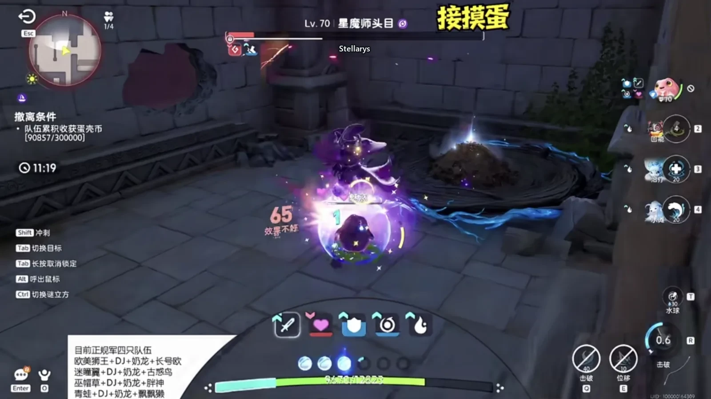
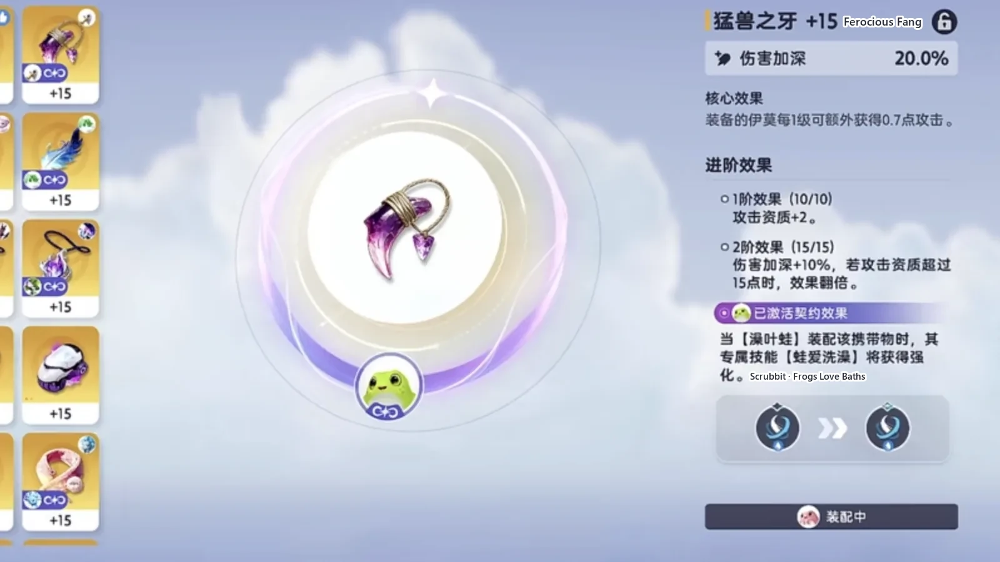
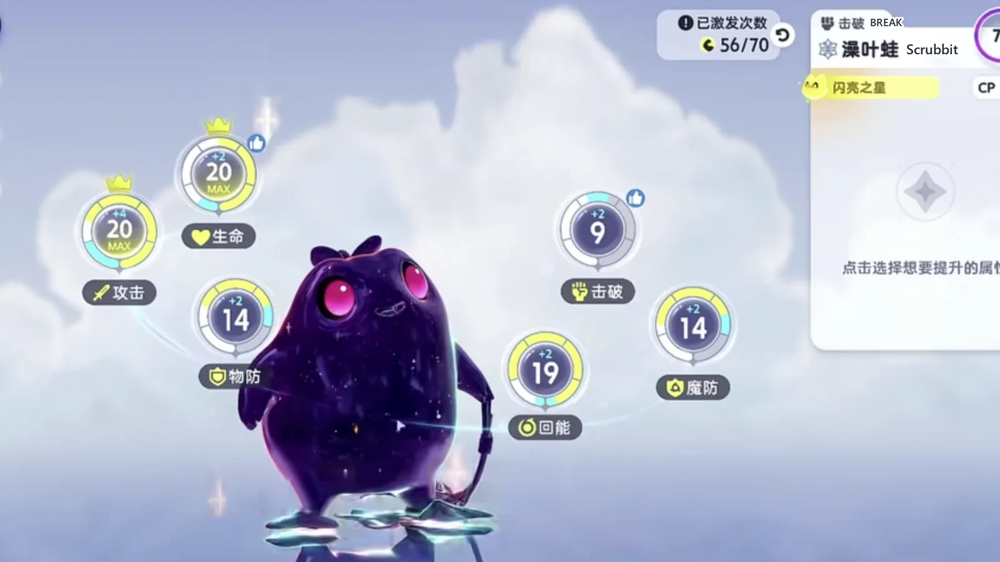
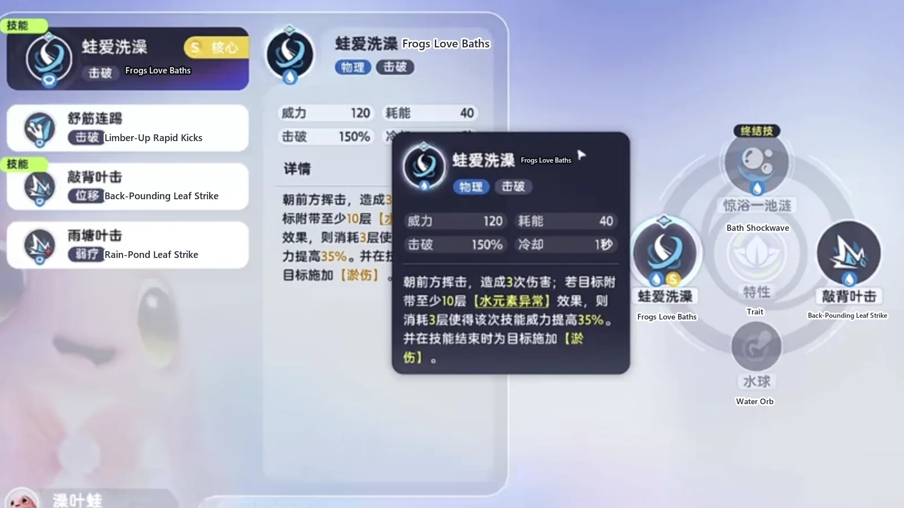
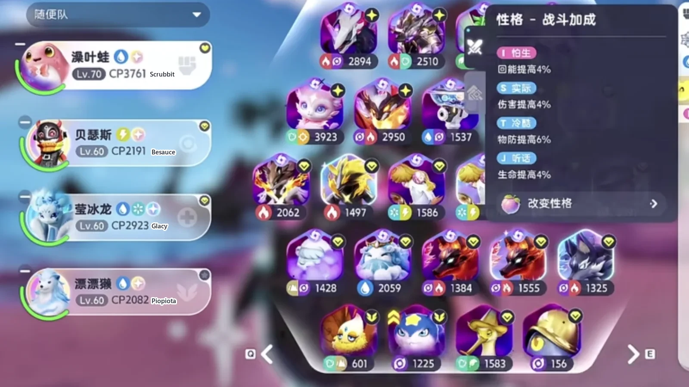
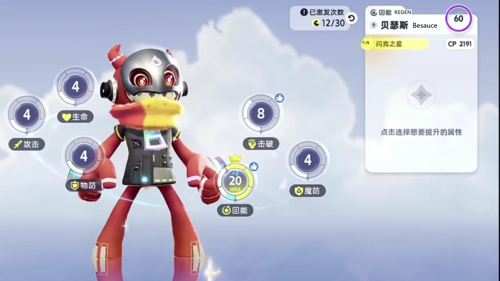

Home首页 / Guides攻略 / Aniimo Egg Heist: The Scrubbit Party That Fights Behind Its Own Shield《伊莫》抢蛋大作战：澡叶蛙肉盾打法
Checked核对于 November 6, 20262026 年 11 月 6 日
Aniimo Egg Heist: The Scrubbit Party That Fights Behind Its Own Shield《伊莫》抢蛋大作战：澡叶蛙肉盾打法
A four-slot Operation: Egg Heist party built on Scrubbit's shield: pull a corridor and the room behind it in one go, stand still inside the boss's swings, and let three support slots carry the rest.一套抢蛋大作战的四格队伍，围着澡叶蛙那层护盾打：通道和房间的怪一趟拉满，站进 BOSS 的攻击里血线都不动，另外三个位置各管一件事。
Two things decide an Egg Heist run: how fast the map clears, and whether you can keep standing when a boss turns around. This party answers both at once.抢蛋大作战的新版本里，这套青蛙队解决的就两件事：清得慢，和打 BOSS 站不住。
The main damage dealer is Scrubbit (Water · Break), a round purple-black frog. Its ultimate puts a very thick shield on it, and while the shield is up the boss barely takes anything off it — which is why the whole fight can be played standing in one spot instead of circling out of skills. Clearing is not slow either: pull a corridor and a room together, wipe them in one pass, and it keeps pace with the Helion (Holy · DPS) party.主 C 是澡叶蛙（Scrubbit，水 · 击破），一只圆滚滚的紫黑色青蛙。它的大招放完，身上会多出一层很厚的盾 —— 盾在的时候，BOSS 打它基本不掉血，所以整场都可以站桩输出，不用绕圈躲技能。清怪这边它也不慢：一条通道加一个房间的怪全拉过来，一趟清干净，效率跟日耀狮（Helion，光 · 输出）那套差不多。
Only a few Egg Heist parties are sitting at the top right now: Hypnyto (Wind · DPS), Witchin (Dark · Grass · Regen), Helion, and this frog party. What this one has is not the highest damage on that list — it is the largest margin for error and the fewest buttons, which is exactly what a player with slow hands wants.现在摸蛋队顶到 T0 的就那么几套 —— 迷瞳翼（Hypnyto，风 · 输出）、巫帽草（Witchin，暗 · 草 · 回能）、日耀狮，再加这一套青蛙。这一套的特点不是伤害最高，是容错高、操作少，适合手残党。
The more you pull, the faster it clears拉怪拉得越满，清得越快
In this mode the speed comes from how much you pull at once, not from how hard you hit. Take a corridor's worth of mobs and a room's worth in one pass and the map is done; split it into two trips and the clearing advantage is gone.这个模式里最影响速度的不是伤害，是你一次拉了多少怪。一条通道加一个房间的怪全拉过来，一趟清完；分成两趟打，清怪的效率就没了。
Plenty of rooms in the maze can be played that way: pull the corridor mobs with the room's and take the whole wave down together. No need to hesitate — just A through them. Scrubbit's ultimate drops the shield the moment it lands, so standing in the middle of the pile costs nothing.迷宫里有不少房间都能这么打：通道上的怪和房间里的怪一起带走，一波全清，不用分批。这种时候不用犹豫，直接 A 死。青蛙的大招一放，盾跟着上来，站在怪堆中间也不会出事。
An unfavourable matchup goes the same way. Luminelle (Electric · Support) and Thornblade (Grass · DPS) both beat Water, and when the two of them come at once the frog is hitting into "not very effective" — pull the whole wave anyway and it still clears.碰上被克制的组合也一样。吊灯水母（Luminelle，电 · 辅助）和刺剑玫（Thornblade，草 · 输出）都克水，两只一起上来的时候，青蛙打它们是「效果不好」；就这样，一波拉满照样全清。
Against a boss: put the shield in front and stop moving打 BOSS：盾顶上去，人就不用动了
A boss is even less work than a room.打 BOSS 比清怪还省事。
Against Stellarys (Dark · DPS), the first thing to do is hit Stellarys. Scrubbit stands in one spot from start to finish; the big shield from its ultimate sits at the front, and Stellarys cannot take a single point of health off it. Two bosses in one run and the health bar never moves.碰到星魔师（Stellarys，暗 · 输出），第一件事是先打星魔师。青蛙全程站着不动，大招给的那层大护盾顶在最前面，星魔师根本打不掉血。一把里连撸两个 BOSS，血线都不带动的。

When the blue runs short mid-fight, feed them one on purpose and the blue comes straight back up. The shield is still there, so giving that one away does not turn into a wipe.中间蓝不够，就顺势送一波，刚好把蓝回上来。盾还在，送这一下也不会翻车。
Feeding the main: nature, held item, stat points主 C 怎么养：性格、携带物、加点
Nature: the damage-and-blue one. Of the lines under it, health with damage reduction is best; health with physical defence works too.性格带伤害回蓝那一套；底下那几条属性，生命减伤最好，生命物防也能用。
The held item is Ferocious Fang, which gives attack and damage amplification. Nearly every held item has been tried on it and Ferocious Fang plays the best of them — it is also the one that suits a low-attack Aniimo.携带物带猛兽之牙，它给的是攻击和伤害加深。几乎所有的携带物都试过一遍，猛兽之牙是玩起来最舒服的，也最适合低攻的伊莫。
The other route is the Omenbone Flute with Dewple (Water · Support). That works too, but it means stacking the Water element anomaly first, and the stacking is slow. Almost every fight is one core skill, one ultimate, one more core skill and it is over; eight mobs in ten do not survive two core skills, so the stacks never get used. There is no reason to go the long way round when Ferocious Fang can just max the attack out.另一条路是异兆骨笛配水漣漣（Dewple，水 · 辅助）。这套也能打，但要先把水元素异常叠起来，叠层太磨叽。绝大多数战斗都是一个核心技能、接一个大招、再接第二个核心技能就结束了，根本用不上叠层；八成的怪，两个核心技能就撑不住。所以没必要绕那一圈，猛兽之牙把攻击拉满，简单粗暴。

Stat points: attack all the way, health all the way, recovery as far as it goes, and everything left into defence.加点：攻击力点满、生命点满、回能尽量点，剩下全部点防御。

Skills: one to break them, one to finish技能：一个打残，一个收尾
The core skill is Frogs Love Baths, a physical Break hit that swings three times at whatever is in front of it. The fast clearing all comes from this one.核心技能是蛙爱洗澡，物理加击破判定，朝前方连挥三下。清怪快，靠的就是这一下。
The second skill is Back-Pounding Leaf Strike, a dash. Scrubbit's basic attacks mark the far side of a mob; hitting that mark does extra damage and puts Water anomaly on it as well. So once a basic attack has put the mark on, dash straight through it and the mark is cashed in. In practice it is the finisher: the core skill leaves the mob at a sliver, the dash takes the mark and ends it.第二个技能是敲背叶击，一个位移技能。青蛙的平 A 会给怪最远的一侧挂标记，打这个标记有额外伤害，还会顺手带上水元素异常。所以平 A 打出标记之后，直接放位移技能过去，就能把标记敲出来。一般用来收尾：核心技能把怪打残，位移敲标记补死。

The other three slots: recovery, healing, support, one each另外三个位置：回能、治疗、辅助各一个
Slot two is Besauce (Electric · Regen), holding a feather and 20 points into recovery.二号位是贝瑟斯（Besauce，电 · 回能），携带物带羽毛，加点 20 点回能。
Slot three is Glacy (Water · Ice · Heal), with health maxed out.三号位是莹冰龙（Glacy，水 · 冰 · 治疗），生命值点满。
Slot four is Piopiota (Water · Support), also holding Ferocious Fang, with 20 points into attack.四号位是漂漂獭（Piopiota，水 · 辅助），携带物也带猛兽之牙，加点 20 点攻击力。


Why the fourth slot is Piopiota第四位为什么是漂漂獭
Piopiota is there for the passive: for every Aniimo in the party with a different gender, Water strengthening goes up 24%. That makes one rule hard — Scrubbit is female, so Piopiota has to be male. The two must differ; the same gender on both and the passive is thrown away.漂漂獭要的是它的被动：队伍里性别不同的伊莫，水元素强化提高 24%。所以这里有一条硬规矩 —— 青蛙是母的，漂漂獭就得是公的，两只性别必须不一样，一样了这条被动就白给。
Why not Dewple? Dewple is only needed when the main carries the Omenbone Flute; on the Ferocious Fang route there is no use for it. With Ferocious Fang, Piopiota and Dewple come out about even on damage, and Dewple has to re-drop a buff every 20 seconds while Piopiota is hardly ever touched. Less work, so Piopiota goes in.为什么不带水漣漣？主 C 带异兆骨笛，才需要水漣漣；带猛兽之牙走简单粗暴这条路，就不需要。猛兽之牙的青蛙，带漂漂獭和带水漣漣伤害差不多，而水漣漣每 20 秒要丢一次 buff，漂漂獭几乎全程不用管。省事，所以上漂漂獭。
Against the Hypnyto party: less damage, more room for error跟迷瞳翼那套比：伤害少一截，容错多一截
This party does not do the damage the Hypnyto party does, and it is not as explosive to play. But the margin for error is far larger — the shield is up, so you are still standing, and being surrounded by the mobs that counter you does not kill you.这套阵容的伤害没有迷瞳翼那套夸张，打起来没那么爆。但青蛙的容错率比迷瞳翼高太多 —— 盾在，人就在，被克制的怪围上来也死不了。
In one line: a very well-rounded party, the best fit for slow hands, and almost no execution.换成一句话：这是一套很均衡的阵容，手残党最适合，没什么操作。
The whole run, in order一套流程走下来
Walking in, think about the pull first: corridor mobs and room mobs together, take them at full, one pass.进图先想拉怪：通道和房间的怪一起带走，拉满再打，一趟清完。
The clearing order is fixed: Frogs Love Baths leaves them at a sliver, the basic attack puts the mark on, Back-Pounding Leaf Strike dashes in to finish.清怪的顺序是固定的：蛙爱洗澡把怪打残，平 A 挂上标记，敲背叶击过去收尾。
Against a boss, click Stellarys first, drop the ultimate so the shield comes up, and once the shield holds there is nothing left to do but stand and hit; when the blue runs low, take one and trade it back.碰上 BOSS 先点星魔师，大招一放盾跟着上来，盾顶住了人就不用动，站着打；蓝不够就挨一波，把蓝换回来。
Only one order matters in the whole thing: the shield comes from the ultimate. No ultimate, no standing still. Ultimate first, then step in; with the shield up, all that is left is pulling the wave full and cashing the marks.整套打法里只有一处顺序要紧：盾是大招给的，大招没放，站桩就不成立。先放大招，再往里站；盾在，剩下的事就是把怪拉满、把标记敲掉。
More guides相关攻略
- Aniimo Egg Heist PvP: Hypnyto, and One Mantis for Each Opponent《伊莫》抢蛋大作战 PVP：迷瞳翼带两螳螂 — A four-slot PvP party for Operation: Egg Heist: Hypnyto carries the damage, Fulmintis answers Hypnyto, Ignitis answers Fulmintis, and Glacy keeps the main one standing — plus the habits that get the egg home.一套抢蛋大作战的 PVP 队伍：迷瞳翼打伤害，电刺螳螂专收迷瞳翼、淬刃螳螂专收电刺螳螂，莹冰龙保住主 C —— 再加上把蛋平安搬回去的那几个习惯。
- Aniimo's Water Team: Three of the Four Are There to Set Up Sherro's One Sword《伊莫》水系配队：一剑流星骑士，三只铺路只为最后那一剑 — A four-Aniimo Water party built around one damage dealer: what Piopiota, Panpanta and Turbo each lay down before Sherro comes in, and the order to switch them in.一套四只的水系阵容，全部围绕一个输出位搭：星骑士进场之前，漂漂獭、胖胖獭、蓬蓬羊各负责什么，以及换人的顺序。